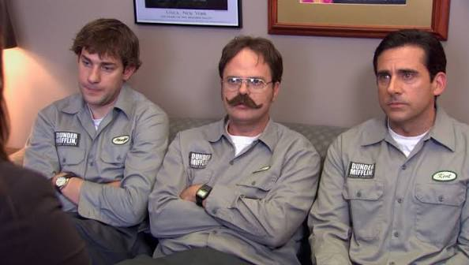

Branch overview / prepared for corporate
The Office
A documentary record of ordinary workdays at Dunder Mifflin's Scranton branch. The NBC adaptation of Ricky Gervais and Stephen Merchant's British series was developed by Greg Daniels and ran from 2005 to 2013: nine seasons, 201 episodes, and a remarkable number of meetings that could have been emails.
- Branch
- Scranton, PA
- Operating period
- 2005-2013
- Episodes filed
- 201

Media file / opening credits
The Office Theme
Instrumental arrangement of the Scrantones theme, available through Spotify.
Personnel / current seating plan
Branch directory
- 01Michael Scott
- 02Dwight Schrute
- 03Jim Halpert
- 04Pam Beesly
- 05Ryan Howard
- 06Andy Bernard
- 07Stanley Hudson
- 08Angela Martin
Appendix / documentation became difficult
Unscheduled events
- Incident 01 / Origin story
The Office began as a British series created by Ricky Gervais and Stephen Merchant.
- Staffing note / Michael's role
Bob Odenkirk was once considered for Michael Scott. Rainn Wilson also auditioned for Michael before being cast as Dwight.
- Travel expense / unapproved
John Krasinski filmed the Scranton footage used in the opening credits while researching the area.
- Facilities / proposal set
The gas-station rest stop where Jim proposes to Pam was built as a replica set for roughly $250,000.
- Audio / cleared for use
Jay Ferguson composed the theme song, performed by The Scrantones.
- Viewer retention / see attached
“Scott's Tots” is frequently cited as the show's most skipped episode. Please do not schedule it for morale day.
